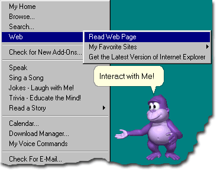

|
|
| New! 250 "Joke" Add-On Modules (Vol. I & II) |
| It's finally here! With the "250 Joke
Add-On" Modules (Volume I & II), BonziBUDDY
will have a wealth of knowledge in Jokes and interesting real life facts!  Copyright © 2003 by BONZI Software Inc. All Rights Reserved
After installing the BonziBUDDY
Joke Add-Ons, BonziBUDDY will learn and know
over 500 more Jokes! These jokes are very kid and adult safe! They will put a smile on
your face whether your 2 years old or 100! |
SPECIAL OFFER:
For a limited time, you can send your BonziBUDDY
to school to learn over 250 new Jokes for a onetime fee of only $9.95 (Regularly |
System Requirements:Copyright © 1995 - 2003 BONZI Software, Inc. Windows, Microsoft Internet Explorer, and Microsoft are registered trademarks of Microsoft Corporation. BonziBUDDY and BONZI are trademarks of BONZI Software, Inc. All rights and liabilities with respect to BonziBUDDY belong solely to BONZI Software, Inc. Copyright © 1995 - 2003 - All Rights Reserved. |